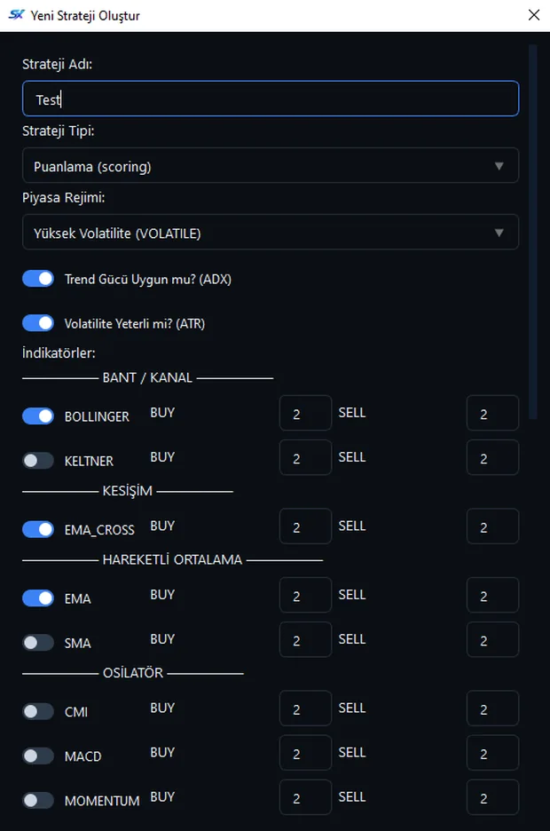

Торговый терминал для Windows: Binance и OKX
Ваши правила.
Автоматическое сканирование, контроль риска.
Sentralyx — криптовалютный бот и терминал автоматической торговли для Binance и OKX. Он сканирует рынок по кругу согласно вашей стратегии, формирует сигналы при выполнении ваших правил и сопровождает позиции с SL/TP. Sentralyx не продаёт сигналы — их формирует ваша стратегия.

Три главные проблемы трейдера
Рынок открыт 24/7, а вы — нет. Sentralyx применяет ваши правила за вас.
Невозможно всё время сканировать весь рынок
Поиск возможностей среди сотен монет занимает часы, и часто вы опаздываете.
Невозможно постоянно следить за SL и TP
Вручную управлять стопами и целями открытых позиций утомительно и рискованно.
Невозможно всё время сидеть у экрана
Эмоциональные решения и пропущенные сигналы часто обходятся дороже всего.
Ваша торговая система за три шага
Программировать не нужно. Соберите стратегию, проверьте её на истории и в виртуальном режиме, затем запустите автоматически.
Стратегия из выбранных индикаторов
В мастере стратегий вы выбираете тип стратегии, рыночный режим и индикаторы. Правило BUY/SELL для каждого индикатора задаёте вы.
- Балльная система, большинство, квалифицированное большинство и полное согласование
- Фильтры ADX, ATR и рыночного режима
- Настраиваемые правила для 30 индикаторов

Проверка до реальных денег
Бэктест запускает стратегию на исторических данных с учётом комиссии и проскальзывания. Затем вы проверяете её в виртуальном режиме на сегодняшнем рынке без реальных денег.
- Симуляция комиссии и проскальзывания
- Монте-Карло, анализ по дням/часам/направлению, график эквити
- Виртуальный режим: та же схема, без реальных ордеров

От сигнала к позиции — по правилам
При появлении сигнала позиция открывается по вашим настройкам. Открытыми позициями вы управляете с одного экрана: закрыть, закрыть половину, перенести SL, задать TP.
- Только спот, гибридный или только фьючерсы
- Дневной лимит убытка и максимум позиций
- Управляет только своими позициями

Весь процесс в одном терминале
Сканирование, стратегия, тестирование, управление позициями и отчёты — в одном приложении.
Сканер и таблица сигналов
Результаты индикаторов, сигнал BUY/SELL/NONE и причина отсутствия сигнала для каждой монеты.
ПодробнееНесколько таймфреймов
Более избирательные сигналы с подтверждением старшего (MTF) и младшего (LTF) таймфрейма.
ПодробнееРеалистичный бэктест
Тест на истории с учётом комиссии и проскальзывания, Монте-Карло и детальный анализ.
ПодробнееЗащита прибыли
Трейлинг-стоп, безубыток, закрытие половины и перенос SL на вход.
ПодробнееВиртуальный режим
Симуляция торговли по той же схеме без реальных денег. Свободное переключение между виртуальным и реальным режимом.
ПодробнееОтчёты и экспорт
Дневная сводка, доля успешных сделок, общий/средний PnL, лучшая и худшая сделка. CSV, PDF и Excel.
ПодробнееКлючи у вас, контроль у вас
Sentralyx — настольное приложение, работающее на вашем компьютере. Меры, направленные на снижение риска:
Зашифрованные API-ключи
Ключи шифруются ключом, полученным из аппаратного идентификатора устройства, и хранятся локально. Файл настроек на другом устройстве расшифровать нельзя.
Разрешение на вывод не нужно
Приложение рекомендует отключить в API-ключе разрешение на вывод средств. Достаточно чтения и торговли.
SL/TP остаются на бирже
Стоп-лоссы и тейк-профиты отправляются и на биржу и остаются там даже при закрытом приложении.
Только свои ордера
Работает с ордерами с префиксом «SX»; не трогает позиции другого бота или ваши собственные на том же счёте.

Чем Sentralyx не является
Начните бесплатно, обновитесь, когда будете готовы
Лицензия запрашивается внутри приложения и привязана к устройству.
Free
- Сканирование и анализ
- Бэктест (данные за 30 дней)
- Без открытия позиций
- Реальный режим заблокирован
Full
- Автоматические позиции в виртуальном и реальном режиме
- Бэктест без ограничения периода
- Управление позициями и защита прибыли
- Отчёты и экспорт
Trial
- Все функции Full
- Позиции в виртуальном и реальном режиме
- Бэктест без ограничений
- Без кредитной карты
Оплата в USDT (TRC20). Каждая лицензия действует на одном устройстве.
Частые вопросы
Sentralyx — это сигнальная группа?
Нет. Sentralyx не продаёт и не распространяет сигналы. Сигналы формируются вашей стратегией и правилами.
Нужно ли уметь программировать?
Нет. Стратегия собирается в мастере стратегий выбором индикаторов, а правила BUY/SELL редактируются в интерфейсе.
Открывает ли бесплатная версия сделки автоматически?
Нет. Версия Free сканирует и анализирует, но не открывает позиции. Все функции можно бесплатно попробовать с 7-дневным Trial.
Безопасны ли мои API-ключи?
Ключи шифруются ключом, полученным из аппаратного идентификатора устройства, и хранятся локально. Рекомендуется отключить в API-ключе разрешение на вывод средств.
Проверьте стратегию в виртуальном режиме уже сегодня
Скачайте приложение, соберите стратегию и посмотрите, как она работает, без реальных денег.